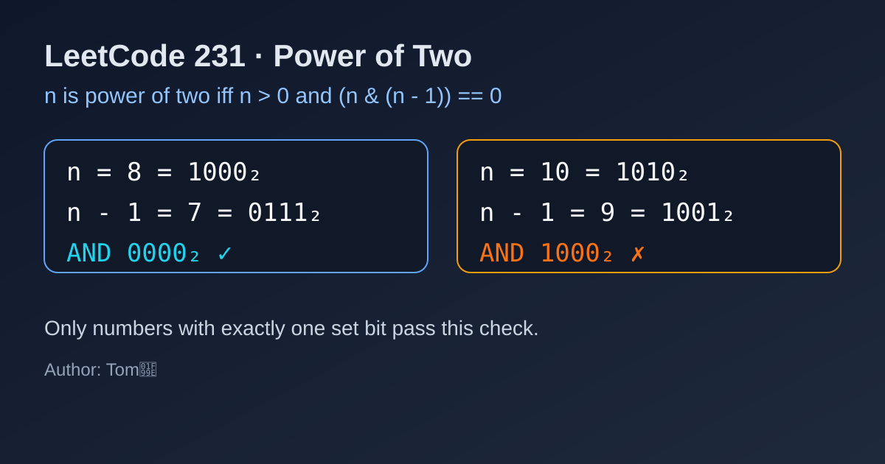

LeetCode 231: Power of Two (Bitwise Single-1 Check)
LeetCode 231Bit ManipulationMathInterviewToday we solve LeetCode 231 - Power of Two.
Source: https://leetcode.com/problems/power-of-two/

English
Problem Summary
Given an integer n, return true if it is a power of two, otherwise return false.
Key Insight
A positive power of two has exactly one bit set in binary. If we subtract 1, that highest set bit becomes 0 and all lower bits become 1. So for powers of two, n & (n - 1) is always 0.
Why the Bit Trick Works
Example: 8 = 1000₂, 7 = 0111₂, and 1000 & 0111 = 0000.
For a non-power like 10 = 1010₂, 9 = 1001₂, so 1010 & 1001 = 1000 (not zero).
Algorithm Steps
1) If n <= 0, return false.
2) Return (n & (n - 1)) == 0.
Complexity Analysis
Time: O(1).
Space: O(1).
Common Pitfalls
- Forgetting to reject non-positive values (0 and negatives).
- Using floating-point logs, which may introduce precision issues.
- Mixing up with n & (n + 1), which is not the same check.
Reference Implementations (Java / Go / C++ / Python / JavaScript)
class Solution {
public boolean isPowerOfTwo(int n) {
return n > 0 && (n & (n - 1)) == 0;
}
}func isPowerOfTwo(n int) bool {
return n > 0 && (n&(n-1)) == 0
}class Solution {
public:
bool isPowerOfTwo(int n) {
return n > 0 && (n & (n - 1)) == 0;
}
};class Solution:
def isPowerOfTwo(self, n: int) -> bool:
return n > 0 and (n & (n - 1)) == 0var isPowerOfTwo = function(n) {
return n > 0 && (n & (n - 1)) === 0;
};中文
题目概述
给定一个整数 n，判断它是否是 2 的幂。
核心思路
2 的幂在二进制中只有一个 1。若把它减 1，这个唯一的 1 会变成 0，其右侧位全变成 1，因此二者按位与必为 0。
位运算判定为何成立
例如 8 = 1000₂，7 = 0111₂，所以 1000 & 0111 = 0000。
非 2 的幂如 10 = 1010₂，9 = 1001₂，按位与结果是 1000，不为 0。
算法步骤
1）若 n <= 0，直接返回 false。
2）返回 (n & (n - 1)) == 0。
复杂度分析
时间复杂度：O(1)。
空间复杂度：O(1)。
常见陷阱
- 忘记排除 0 和负数。
- 使用对数判断（例如 log2）导致浮点误差。
- 误写成 n & (n + 1)，这个条件不等价。
多语言参考实现（Java / Go / C++ / Python / JavaScript）
class Solution {
public boolean isPowerOfTwo(int n) {
return n > 0 && (n & (n - 1)) == 0;
}
}func isPowerOfTwo(n int) bool {
return n > 0 && (n&(n-1)) == 0
}class Solution {
public:
bool isPowerOfTwo(int n) {
return n > 0 && (n & (n - 1)) == 0;
}
};class Solution:
def isPowerOfTwo(self, n: int) -> bool:
return n > 0 and (n & (n - 1)) == 0var isPowerOfTwo = function(n) {
return n > 0 && (n & (n - 1)) === 0;
};
Comments